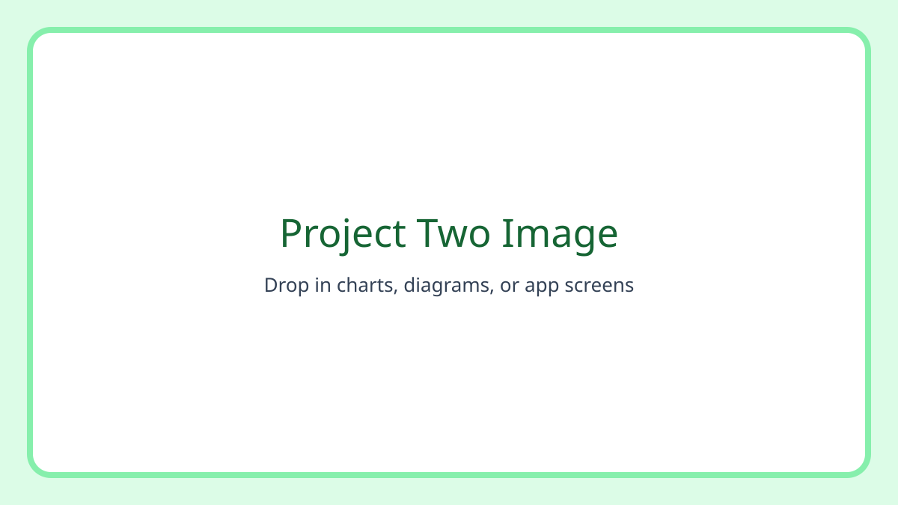

Project Two: Data Tracker Mockup
This is another example post template. Use this format for assignment reflections, screenshots, and a short summary of what you learned.

Project Goal
The goal was to design a simple tracker interface that helps students monitor progress over time.
Image Path Tips
Place your image files in the images/ folder and reference them like
images/file-name.jpg.
<img src="../../images/progress-chart.png" alt="Weekly progress chart">